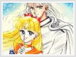
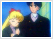
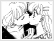
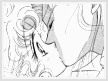
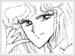

Entity » The Girl
» Love or be Loved
Minako's crushes and those who loved her aren't very apparent in the anime. Most are found in the manga. Since she was the incarnation of the Roman Goddess of Love and Beauty, wouldn't one think that many would fall for her? Ironically, she falls for almost every handsome man she meets. But she's not entirely unlike the Roman Goddess. In fact, there are quite a few who has fallen for her in her past.
Kunzite
Long ago in the Silver Millennium, she was in love with Kunzite, the most powerful of the four generals in the Dark Kingdom. There is very little evidence in the manga, and absolutely none in the anime. It was implied that Sailor Venus often sneaked off to find Kunsite, as Princess Serenity did with Prince Endymion. There were other hints from Naoko Takeuchi's manga, as well as pictures to prove their relationship, as well as the other three senshi and three generals. Do note that this relationship is valid only in the manga. In the anime, Kunzite is homosexual.
Due to a popular doujinshi depicting Venus kissing Kunzite, word circulated that their relationship was a complete rumor. Despite such accusations, a colored image of all four generals affectionately holding their respective lovers are shown in an artbook drawn by Naoko (partly pictured above). They can be found in the 4th manga of BSSM. Please refer to the Artbook translations at Manga Style for further evidence. This relationship is definitely hinted in the manga, more of Minako and Rei rather than Ami and Makoto, however.
Alan
On the flip side, Minako's relationship with Alan was only valid in the anime, as Alan never even appeared in the manga. In the anime, we are briefly introduced to him when Minako told about her past in England. Minako fought crime with him and an older girl, Katarina. She was in love with Alan, but he was unaware of it and didn't return her love. The three were close friends, and one day, they were caught in an explosion. All three survived, but Alan and Katarina thought that Minako had died. Unbeknownst to them, Minako saw them kissing after the explosion. She left England without looking back, and came to Tokyo, where she was introduced as the fifth senshi, Sailor Venus. More about Minako's past with Alan can be found in Past Memories.
Higashi (senpai)
Higashi only appeared in the manga, and was the first villain Sailor V fought against. He came disguised as a senior in Minako's school and became very popular with the girls. He told Minako and the other girls that their hair would look pretty if they wore a big red bow in it. Minako developed a crush on him and almost gave him a love letter. Later, she found out that Higashi liked a girl named Haneda in her school, and that broke her heart. However, Higashi turned out to be a youma known as Narkissos, and Minako killed him later as Sailor V. Regardless, she ended up putting a big red bow in her hair, and the bow has since then become her trademark.
Yaten Kou
The relationship between Yaten Kou and Minako is relatively well known in SM Stars, and only exists in the anime. Subtle hints throughout the series implied some chemistry involved between them. Possibly the biggest hint happens in the episode where Minako tried out for the talent audition. Yaten happened to be one of the judges in the final rounds, and Minako answered a question about the Earth that seemed to have some effect on Yaten. Yaten later realized that the humans on Earth have hopes and dreams, and are capable of shining like the brightest stars. Minako's decision to pursue her dream of becoming an idol in addition to her duty as a Sailor Senshi encouraged Yaten. She showed him that there's more to life than just his mission. Minako is also the one that Yaten confessed to about his doubt of ever finding his princess, Kakyuu. Minako, in turn, comforts him in the sweetest way possible, telling him that he shines the brightest. Their relationship is generally supported among fans.
Adonis
Adonis also appears solely in the manga, under various other pretenses such as Kaitou Ace and Danburite. In the Silver Millennium, Adonis was a soldier of the planet Venus. He truly loved Minako, but since he was a soldier of no rank, she had no way of knowing his existence. One could say he didn't really have a chance with her. Later, he was reincarnated into the future Earth and became Kaitou Ace, also known as Danburite; working with the Dark Kingdom under the four generals. Thus, he became Minako's enemy. He helped her regain her past memories, and she somehow fell for him during that time. However, they could never be together, because he was working for the Dark forces and was Minako's enemy. Minako was eventually forced to defeat him, but before he died, he told Minako that she would never have a successful love life, thus putting the love fortune on her that will last eternity.
Saitou-san
Saitou-san was a man who resembled Kunzite in appearance. He was one of Minako's first loves. But Saitou-san loved a woman named Okapii, a teacher in Minako's school who goes by Miss Okamoto. Miss Okamoto taught Home economics and Saitou-san, her student for three years, fell in love with her. Thus when Minako-chan disguised herself as Miss Okamoto, Saitou-san confessed his love to whom he thought was Miss Okamoto, and gave Minako her first kiss.
Otonaru Maiku
Otonaru-kun was also one of Minako's first loves. He was a transfer student from Russia who had very poor health. Due to his weak physical body, he stays at home a lot and doesn't get the chance to interact with others much. As a result, his classmates avoided him. Minako however, was intrigued by his mysterious and quiet ways. She found out that he is very interested in sports and wanted to join the Autumn Marathon in school. However, he couldn't because of his health. So Minako went to visit him often and sung songs to him (Otonaru-kun's house is a karaoke place). It was discovered later that Otonaru was sick because the Dark Agency had been draining his energy.